The Maasai are not just a tribe; they are a caste of warriors who have dominated East Africa for centuries. They call themselves the "Lords of Cattle" and sincerely believe that the supreme god Enkai, at the beginning of time, gave all the cattle in the world specifically to the Maasai people. From this conviction stems their main trait: they never plow the land. For the Maasai, to drive a plow into the soil is a crime against nature, a scar on the face of the earth. They live only on what the livestock provides, moving in the wake of rains and fresh grass. Tall, slender, in bright red garments, they appear in the savannah like masters, before whom even lions step aside.
In Maasai society, there is a clear division of labor, and building a house is an exclusively female responsibility. A Maasai settlement, called a Manyatta, is a circle of huts protected from the outside by a powerful fence of thorny acacia brush so that predators cannot get to the people and the herd at night. Women weave a frame of flexible branches, interlacing them so tightly that they withstand the weight of the roof. Then the most important part begins: coating the walls with a mixture of cow dung, clay, urine, and ash. In the scorching African sun, this composition hardens and turns into durable "bio-concrete," which does not let water through during heavy rains and holds coolness in the heat. Inside the house, there are no windows—only tiny ventilation holes. This is done on purpose: in the dark, flies do not bother as much, and the absence of drafts preserves heat from the hearth. The single entrance leads into a small labyrinth so that an enemy or a wild beast cannot burst into the living area at once.
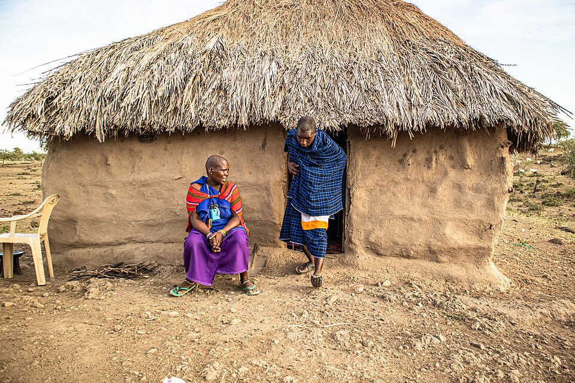
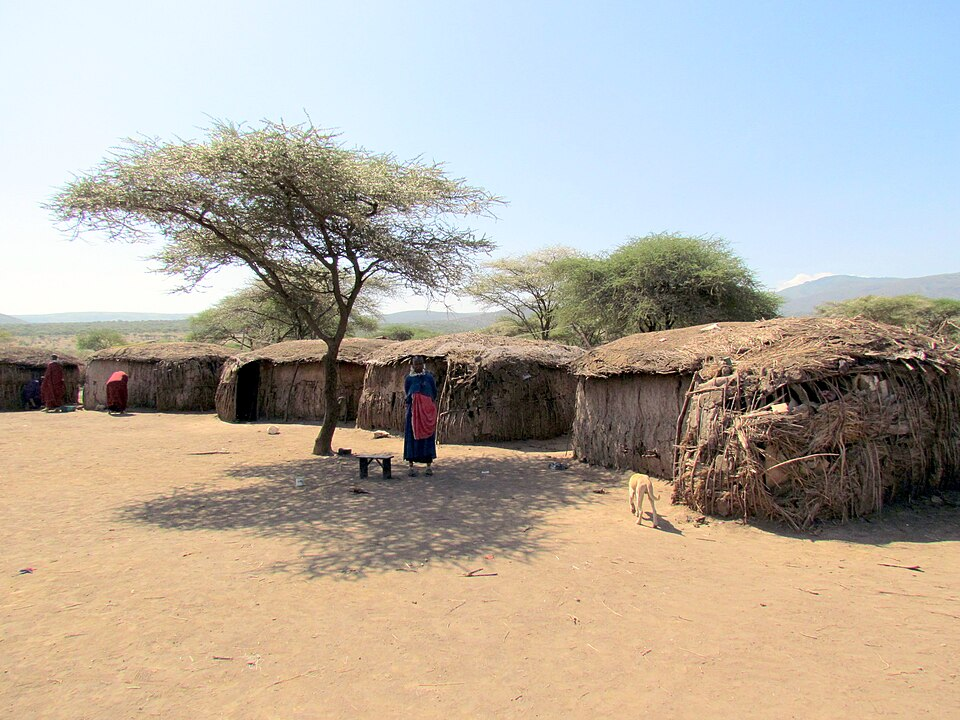
The Maasai diet is something that shocks Western doctors but allows the tribe to maintain perfect health and teeth until old age. They practically do not eat plant foods. Animal blood is their "vitamin cocktail." For the Maasai, a cow is not just food or currency; it is a sacred animal. The Maasai do not kill a cow for food every day. Instead, they use a masterly technique: an experienced warrior carefully pierces the jugular vein on the neck of a bull with an arrow, collects a vessel of fresh blood, and immediately seals the wound with a mixture of mud. The cow remains alive and fully recovers in a couple of weeks. Fresh blood is drunk either pure or mixed with raw milk, resulting in a thick, nutritious drink. Meat is consumed rarely, mainly on the occasion of major rituals. Interestingly, they almost do not use salt, replacing it with minerals contained in the blood.
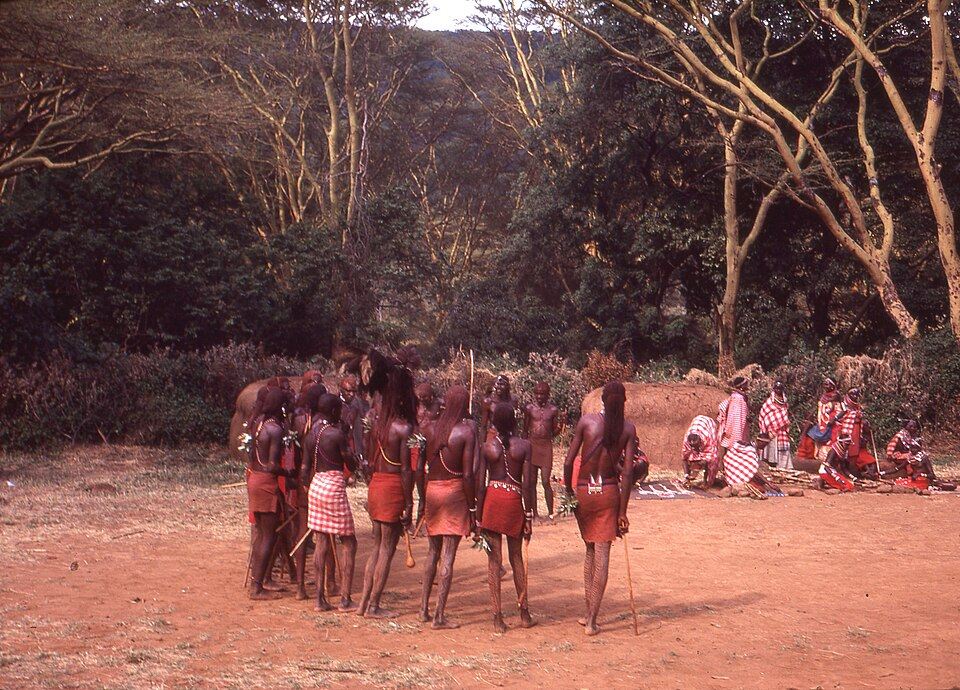
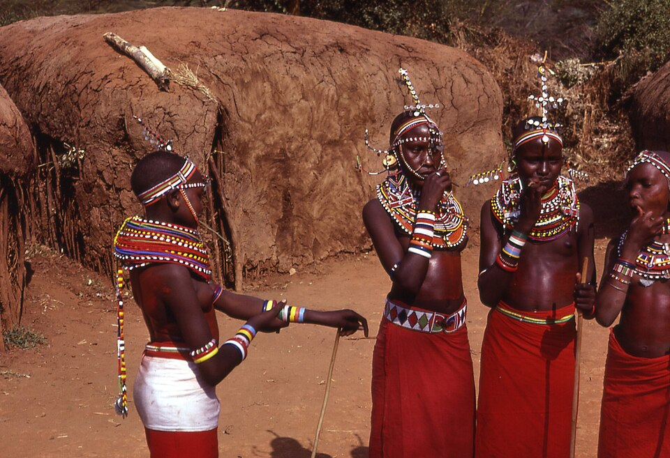
The becoming of a man among the Maasai is a series of tough trials. A boy is not considered a man until he passes the rite of passage into the warriors—the Morans. Teenagers undergo circumcision at the age of 14-16. The main condition is that during the procedure, the boy must not even blink. If he flinches or cries out, a brand of shame will fall on his entire family, and he will never become a full warrior. Tradition required a young warrior to kill an adult lion with a single spear to prove his prowess. Now, due to animal protection, this is allowed only if a lion attacks the herd, but the "hunter's spirit" still lives in every Moran. They go into the savannah for long months, learning survival and the protection of their clan.
A Maasai man's life is a strict ascent up a ladder of statuses. The entire nation is divided into groups by age, and the transition from one group to another is a major event for the entire clan. From early childhood, they bear responsibility for small livestock. This is a period of learning discipline and observing nature. After passing the initiation rite, young men become "morans." They are obliged to live separately from the rest of the tribe in special camps—"empukazi."
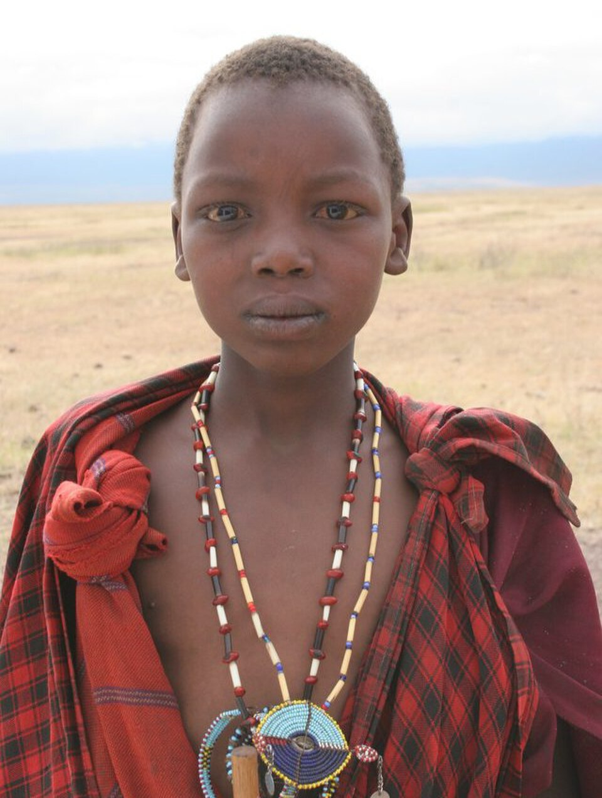
The structure and life of the Empukazi: Morans build their own camp away from the main village. In this camp, there are no elders and no married men. This is the territory of the young and strong. Unlike regular villages, the Empukazi often does not have an external thorny fence. The warriors believe that their spears and courage are the best defense, and to build a fence for them means to show cowardice in the face of the predators of the savannah. In the Empukazi, the mothers of the warriors (who cook for them) and their unmarried sisters or girlfriends can live. Wives are not allowed for warriors until they pass this stage of life.
"A Maasai warrior never eats alone. If he has a piece of meat or a jug of milk, he is obliged to share it with his brothers-in-arms."
In the Empukazi, laws operate that turn teenagers into steel defenders. The ban on eating alone fosters absolute unity—in battle, one will not abandon another. The ban on consuming food in the presence of women is part of ritual behavior; warriors eat secretly or only in the circle of their own to maintain an aura of mystical power. Service to the community is paramount: although they live separately, at the first signal of the elder's horn, the warriors from the Empukazi must rush to the defense of any herd or village of their clan. The period of life in the Empukazi lasts from 7 to 10 years. This is a time of "polishing" character. Here they learn the history of the tribe, songs, dances, and the art of war. When this period ends, a huge ceremony is held—Eunoto, after which the warriors cut off their long hair (which they have carefully grown and smeared with ochre all these years), return to ordinary villages, receive the right to marry, and become elders.
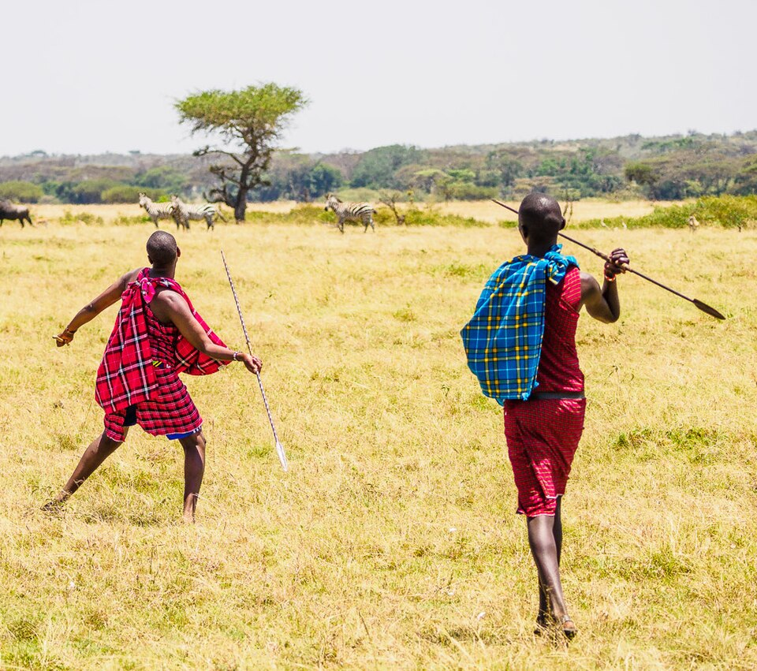
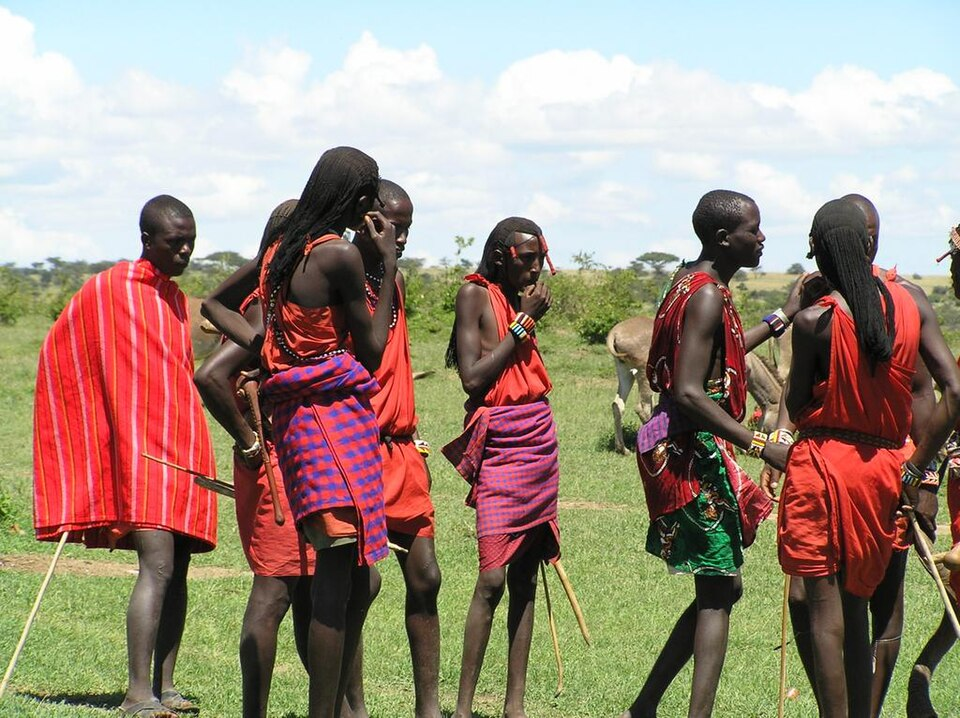
Only upon reaching maturity and starting a family does a warrior transition to the status of an elder. It is this group that makes political decisions, acts as judges in disputes, and preserves the history of the lineage. A warrior's clothing is a bright red cloth. This is not just fashion. The Maasai believe that the color red scares predators, and a lion, seeing a red spot from afar, will prefer to get out of the way, knowing it will meet resistance. The most practical detail of their wardrobe is sandals, which they cut from old car tires. This is the ideal footwear for the thorny bushes of Africa, which is not afraid of rocks or snakes.
The famous Adumu dance (jumping high) is not just entertainment, but a demonstration of strength. Warriors compete to see who can jump higher without touching the ground with their heels. This is an important element when choosing a bride: the higher the jump, the stronger and more resilient the groom is considered.
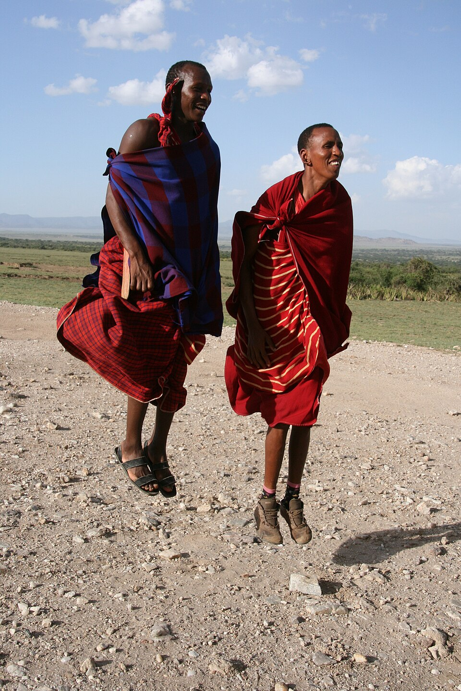
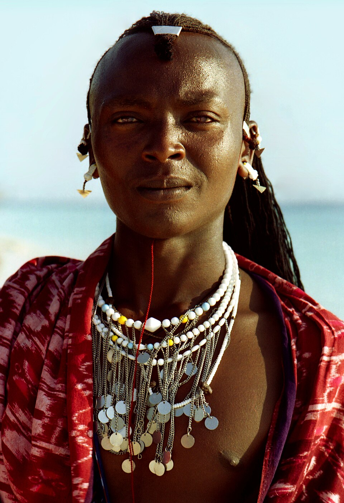
The Maasai possess unique knowledge about healing without modern pharmacies. Their medicine is a mixture of herbal medicine and faith. Elders know hundreds of species of plants that can stop bleeding or cure malaria. For example, acacia bark is used by them to prepare antiseptic decoctions. Physical pain for the Maasai is an illusion. From childhood, they are taught to suppress any signs of suffering, so even serious wounds they process calmly, without anesthesia, using the juice of medicinal herbs.
For the Maasai, beads are a real passport. Women weave complex necklaces where each color has a strict meaning. White symbolizes peace, purity, and cow's milk—the basis of their life. Red is the color of blood, danger, and the incredible bravery of the moran warriors. Blue is the color of the sky and the god Enkai, who sends rains to their parched lands. Black means the holy land and the hardships that the people overcome together. By the set of jewelry on a woman, one can immediately understand whether she is married, how many children she has, and how rich her husband is in terms of cattle heads.
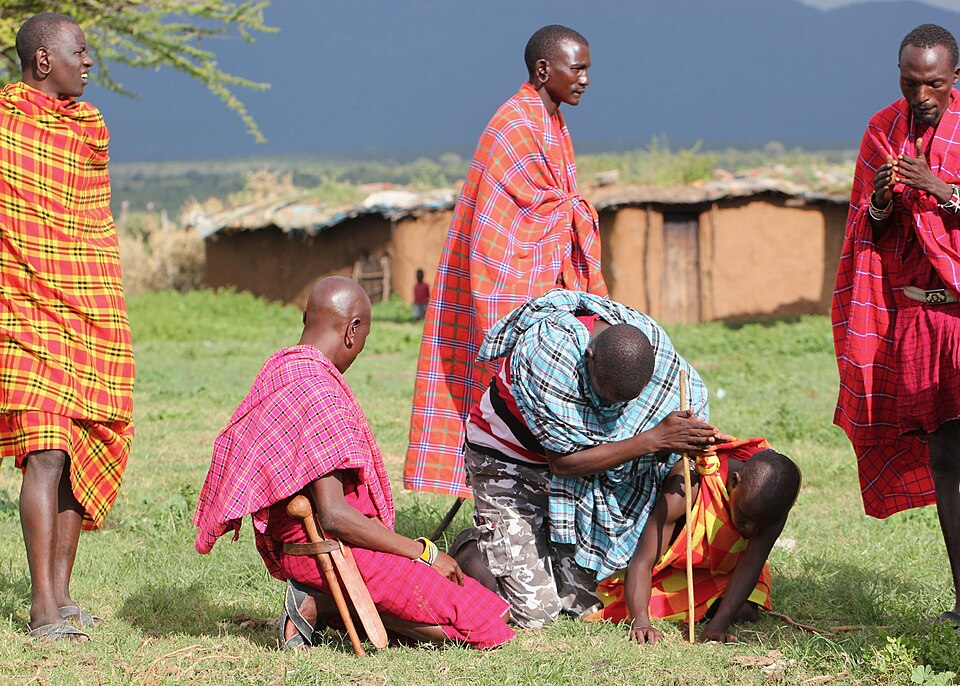
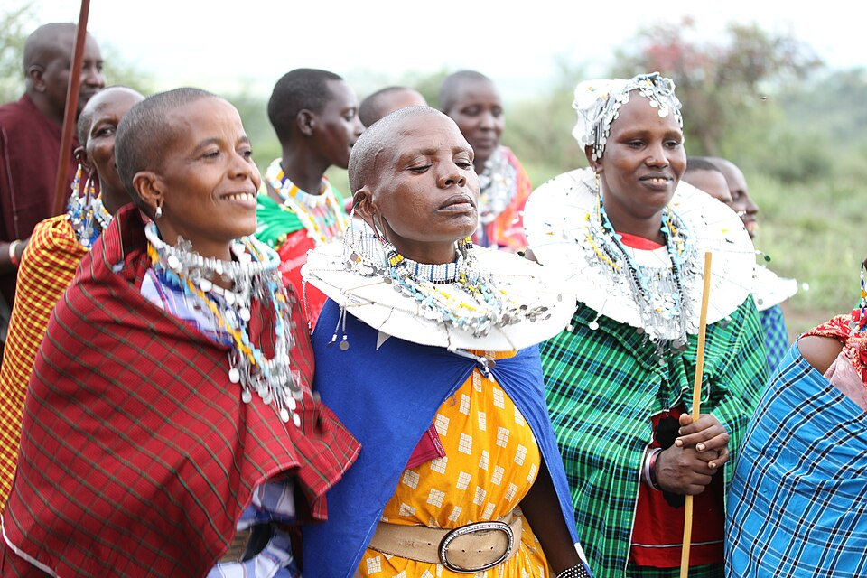
When concluding a marriage, the groom's family transfers livestock to the bride's family. This is not a "purchase" of a wife, but compensation to the girl's family for the fact that they are losing working hands and a potential mother who will raise new warriors for their clan. Marriage among the Maasai is a union not of two people, but of two clans. When the bride leaves her home hut, her father blesses her by spraying milk on her. This symbolizes a wish for fertility and prosperity in the new home.
The bride must go to her husband's house without looking back. It is believed that if she looks back, she will turn into stone. This symbolizes her full entry into the new family and the breaking of old duties.
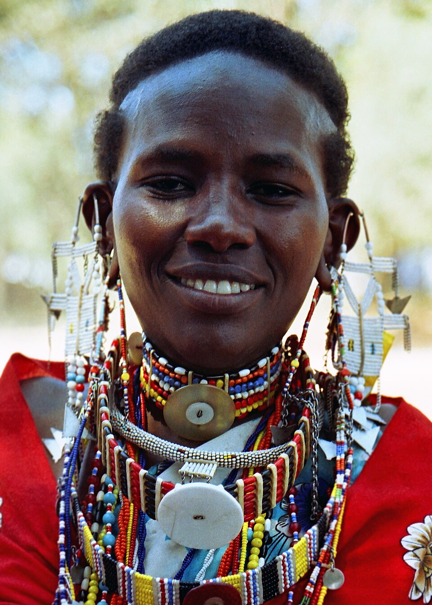
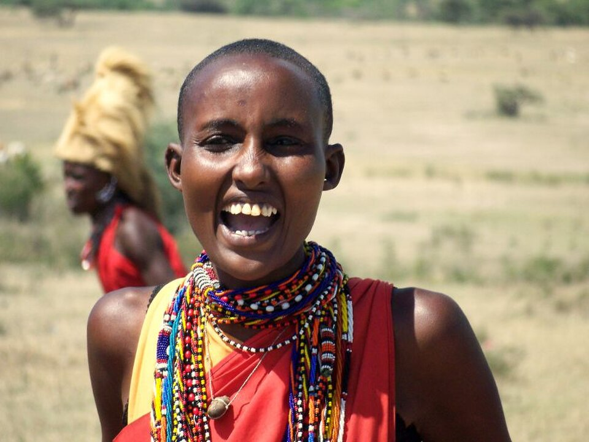
In the structure of the Maasai, there are no kings, but there is the Laibon. This is a hereditary position of high priest and soothsayer. The Laibon does not engage in management in the usual sense, but without his blessing, warriors cannot start a campaign, and the tribe cannot change its nomadic location. It is believed that the Laibon is capable of communicating with the spirits of ancestors and predicting the weather or the outcome of battles. His authority is unquestionable, and his personality is surrounded by deep respect and mystical fear.
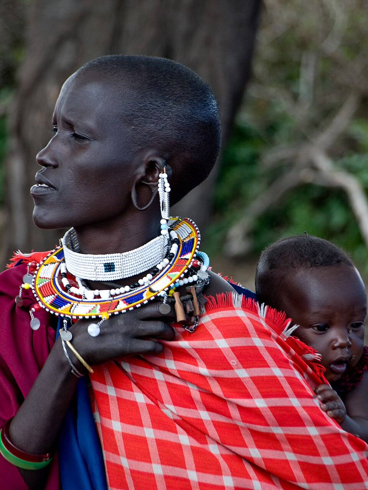
The traditional world-view of the Maasai excludes the concept of land ownership. The land belongs to everyone and no one at the same time. They roam freely, following the will of the deity who sends rain. The Maasai believe that after death, the soul does not go to some other world, but simply disappears, returning to nature. That is why they do not build tombs or mark burial sites, believing that a person should leave the earth as clean as it was before their birth.
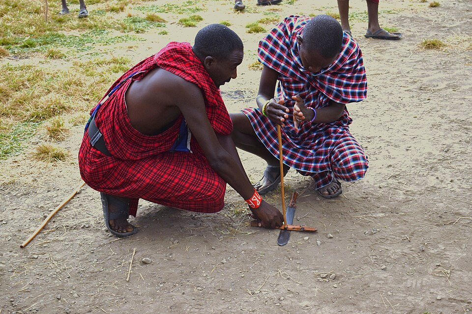